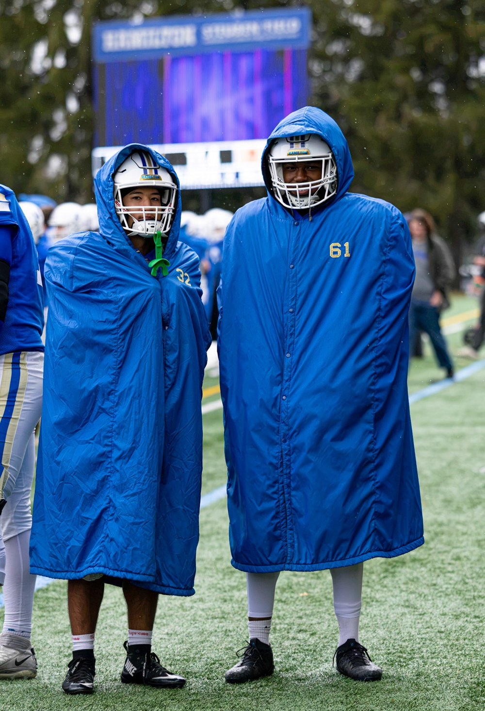

About
Chemistry student, chemical-engineer-in-training, and the person behind OlivAir, my own study of steel slag.
I’m studying chemistry at Hamilton, on my way to chemical engineering at Columbia.
Studying
The 3-2 dual-degree program: three years at Hamilton, then two at Columbia. I’m a Gates Scholar and a QuestBridge Scholar.
Building
It started as a passive olivine device that placed second at the Frost Science STEM Challenge. I’m in early technical dialogue with researchers at Yale about the work.
Outside the lab
Wide receiver for Hamilton football in my sophomore year, goalkeeper for soccer in my freshman year. Seven months as a hospice care intern at VITAS, and a Certified Nursing Assistant.
Research
Independent researcher, OlivAir
Designing ways to put steel-slag fines to work: a covered-bay gas treatment for fresh fines, a reactor that uses them in place of quicklime on acid mine water, and a gas-control rule for dry-stack tailings. I wrote a platform paper and ten application extensions, cut the work to three projects after many rounds of review, and built a lean cost model with every input cited or flagged. It is modeled on paper (TRL 2), not built.
Research with Dr. Mike McCormick
Weekly research meetings since mid-September. I am working through the literature on olivine dissolution one paper at a time, answering his technical critiques of my designs, and preparing bench work. General laboratory safety training is complete.
Technical correspondence with Yale researchers
I shared the platform paper with a Yale research group working on carbon removal, and we have exchanged technical feedback as the design developed.
MIT Energy & Climate Hack · Semifinalist
Two-person team. We built and deployed a decision dashboard for a sodium-ion battery challenge in a weekend, and stress-tested its decision rule on 198 simulated packs. All results are simulated.
Frost Science STEM Challenge · 2nd place
A team engineering-design project on climate change. It was the first version of OlivAir: a passive, solar-driven device to speed up olivine weathering.
Work & athletics
Recreation Equipment Hub Staff
I manage and issue recreational and athletic equipment for the college community.
NCAA student-athlete
Goalkeeper for Hamilton soccer in my freshman year, then wide receiver for Hamilton football in my sophomore year.
Hospice Care Intern
I supported healthcare professionals in patient-centered hospice care for patients and families. I am also a Certified Nursing Assistant.
Involvement
National Society of Black Engineers
Member.
AIChE
Working through the SAChE process-safety certificate program.
Miami Southridge Senior High School
High school diploma. Where the first version of OlivAir was built and entered into the Frost Science STEM Challenge.
Hamilton College
B.A. Chemistry, class of 2029, in the 3-2 dual-degree engineering program. OlivAir’s process design and cost modeling grow out of this coursework.
Columbia University
B.S. Chemical Engineering, the engineering half of the 3-2 program: reactor design, transport phenomena and process systems.
Stanford Online
Free energy, chemical potential and multi-phase equilibrium: the basis for OlivAir’s dissolution and carbonate modeling.
AIChE · SAChE Certificate Program
Completed Sept 2026, the first of the Level One safety block. Active AIChE undergraduate student member.
Hamilton College
Completed Fall 2026. Required clearance for bench work in Dr. Mike McCormick’s lab.
American Red Cross
Certified in cardiopulmonary resuscitation, automated external defibrillator use and first aid.
Frost Science STEM Challenge
A team project on climate change at the Frost Museum of Science in Miami, judged by content experts. It was the first version of OlivAir: a passive, solar-driven device with a photocatalytic TiO₂/zeolite coating to speed up olivine weathering for carbon mineralization.
MIT Energy & Climate Hack · Nov 6–8, 2026
A two-person team with Aaryan Jain, on a challenge from REON, a sodium-ion battery company. See what we built.
Hamilton College. Full-ride scholarship for high-achieving students with significant financial need.
Hamilton College. Matched through the QuestBridge National College Match program.
Davidson College. Finalist for the Posse Foundation’s Miami scholarship cohort.

Football and soccer
I played soccer as a goalkeeper my whole life, through high school and my freshman year at Hamilton. With seven goalies on the roster and no realistic path to playing time, I walked on to football in my sophomore year with no playing experience.
A battery decision dashboard in a weekend
REON sells sodium-ion battery blocks for commercial buildings. In a string of cells, the weakest cell holds back the rest, and one failed cell can take the whole string down. My teammate Aaryan Jain and I built a dashboard that compares a plain string with one that controls each cell.
Open the live dashboard →Every figure is a simulation on assumed sodium-ion behavior, not REON data. We built the dashboard during the hack on a toolkit prepared beforehand, which the organizers allowed.
Chemical engineering
Reactor and process design, mass and energy balances, techno-economic modeling — developed through OlivAir's reactor design and cost model and formalized through the 3-2 Columbia program.
Hazardous waste management
Trace metal mobility, discharge compliance, and characterization of acidic and alkaline industrial waste streams.
Marine conservation
Carbonate equilibria and alkalinity: the chemistry behind carbonating slag and neutralizing acid water, which also underlies ocean-alkalinity work.
Technical writing
Long-form documentation, from governing equations to techno-economic analysis, for technical and non-technical readers alike.
Let's talk.
I'm always glad to talk chemistry, slag, mine water, or anything OlivAir related.